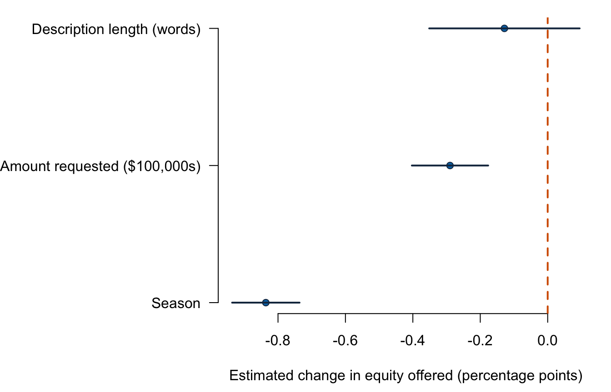

Lecture 4: Multiple linear regression and controls
- state a multiple linear regression model;
- interpret a coefficient while holding the other included predictors fixed;
- explain why simple and multiple-regression coefficients can differ;
- fit and compare multiple-regression specifications in R;
- distinguish statistical control from causal identification.
Before class
Video preparation
Watch Stanford Statistical Learning
3.3
Multiple Linear Regression. Focus on the conditional interpretation of one
coefficient and the reason several predictors may be included together.
Review Mathematics Refresher: subscripts and multivariable equations if needed.
Why might the simple slope from equity_offered_pct ~ season differ after
amount requested is added to the model?
Check your preparation
If requested amount is associated with both season and offered equity, the simple slope mixes their relationships. Multiple regression compares seasons at the same included request amount, so its coefficient can differ.
In class
Stanford explanation (review): 3.3 Multiple Linear Regression.
More than one predictor
For predictors \(X_{i1},\ldots,X_{ik}\), the model is
\[ Y_i=\beta_0+\beta_1X_{i1}+\cdots+\beta_kX_{ik}+\varepsilon_i, \]
with conditional mean
\[ E[Y_i\mid X_{i1}=x_1,\ldots,X_{ik}=x_k] =\beta_0+\beta_1x_1+\cdots+\beta_kx_k. \]
The coefficient \(\beta_j\) is the expected change in \(Y\) for a one-unit increase in \(X_j\), holding the other included predictors fixed.
This is a model-based comparison. It does not require that two real pitches are identical on every feature; it compares fitted conditional means at fixed values of the included variables.
A Shark Tank model
Let the outcome be initial equity offered, in percentage points. Include:
season;ask_100k, requested dollars divided by 100,000;description_words, the number of words in the source’s short description.
equity_model <- lm(
equity_offered_pct ~ season + ask_100k + description_words,
data = sharks
)
summary(equity_model)##
## Call:
## lm(formula = equity_offered_pct ~ season + ask_100k + description_words,
## data = sharks)
##
## Residuals:
## Min 1Q Median 3Q Max
## -15.295 -4.776 -1.283 3.288 82.106
##
## Coefficients:
## Estimate Std. Error t value Pr(>|t|)
## (Intercept) 22.02493 0.88785 24.807 < 2e-16 ***
## season -0.83615 0.05098 -16.401 < 2e-16 ***
## ask_100k -0.28975 0.05771 -5.021 5.79e-07 ***
## description_words -0.12834 0.11375 -1.128 0.259
## ---
## Signif. codes: 0 '***' 0.001 '**' 0.01 '*' 0.05 '.' 0.1 ' ' 1
##
## Residual standard error: 7.619 on 1437 degrees of freedom
## Multiple R-squared: 0.1876, Adjusted R-squared: 0.1859
## F-statistic: 110.6 on 3 and 1437 DF, p-value: < 2.2e-16The fitted equation is approximately
\[ \widehat{equity} =22.025-0.836\,season-0.290\,ask_{100k} -0.128\,description\_words. \]
Interpret each slope conditionally:
- At the same requested amount and description length, one later season is associated with 0.836 percentage points less initial equity offered.
- At the same season and description length, an additional $100,000 requested is associated with 0.290 percentage points less initial equity offered.
- At the same season and request, one additional description word is associated with 0.128 percentage points less initial equity offered.
The last estimate is not statistically distinguishable from zero at 5% in the classical summary. Its point estimate should still be reported; “not significant” is not the same as “exactly zero.”
A coefficient-interpretation protocol
Use the same five checks every time you interpret a slope:
- Estimate and direction: state the fitted change and its sign.
- Predictor step and unit: say what a one-unit increase means.
- Outcome unit: state the unit in which the outcome changes.
- Conditioning: name the other included predictors being held fixed.
- Scope: identify the analysed records and say “associated with” unless a research design justifies a causal claim.
The variables in this model use deliberately different units:
| Term | A one-unit increase means | Coefficient unit |
|---|---|---|
season |
one later season | equity percentage points per season |
ask_100k |
$100,000 more requested | equity percentage points per $100,000 |
description_words |
one additional word | equity percentage points per word |
Scale the coefficient to the comparison readers care about. Holding the other included predictors fixed:
- five later seasons correspond to \(5(-0.836)=-4.18\) fitted equity percentage points;
- $500,000 more requested is five
ask_100kunits, corresponding to \(5(-0.290)=-1.45\) percentage points; - ten additional description words correspond to \(10(-0.128)=-1.28\) percentage points.
Rescaling a predictor changes the numerical coefficient and its SE but not the fitted values, t statistic, or substantive relationship. Reporting a tiny “per dollar” coefficient would be correct but hard to read; $100,000 units make the same model interpretable.
Why coefficients change
Compare the season slope across specifications:
m_simple <- lm(equity_offered_pct ~ season, data = sharks)
m_adjusted <- lm(equity_offered_pct ~ season + ask_100k,
data = sharks)
m_full <- equity_model
c(
simple = coef(m_simple)["season"],
adjusted_for_ask = coef(m_adjusted)["season"],
adjusted_for_ask_and_words = coef(m_full)["season"]
)## simple.season adjusted_for_ask.season
## -0.8241241 -0.8143307
## adjusted_for_ask_and_words.season
## -0.8361515A coefficient changes when added predictors account for variation that was previously absorbed into the simpler association. The change is informative, but it does not prove that the larger model is causal or “correct.”
Control variables: useful but not magical
Including a control can:
- make a comparison more like-for-like on measured dimensions;
- reduce residual variation;
- reveal that a simple association was partly compositional;
- increase uncertainty when predictors overlap strongly.
It cannot automatically control for unmeasured factors, reverse causality, selection into the sample, or measurement error. A “control variable” is just an included predictor unless the research design and assumptions justify a causal role.
Assumptions extend to the full predictor set
For multiple regression, check:
- the conditional mean is linear in included terms;
- \(E[\varepsilon_i\mid X_{i1},\ldots,X_{ik}]=0\);
- observations are independent under the design;
- no predictor is an exact linear combination of the others;
- classical SEs require constant conditional error variance;
- exact small-sample t/F inference uses conditional normality.
High correlation among predictors does not bias OLS by itself, but it can make individual coefficients unstable and imprecise. Exact linear dependence makes the coefficients unidentified.
A coefficient plot keeps units visible

The horizontal axis is the estimated change in initial equity, in percentage points, for the one-unit predictor step named on each row. A dot is the coefficient estimate; its horizontal line is the 95% confidence interval; the dashed vertical line marks zero. Each row uses a different predictor unit, so coefficient magnitudes are not directly comparable without considering those units.
After class
Retrieval
- What phrase must appear in a multiple-regression slope interpretation?
- Why can a coefficient change after another predictor is added?
- What is the zero conditional mean assumption?
- Why do controls not automatically identify causality?
- What problem can strongly overlapping predictors create?
- What five elements belong in a slope interpretation?
Check your answers
- “Holding the other included predictors fixed.”
- The simpler slope may combine relationships involving omitted correlated predictors.
- The error has mean zero at every combination of included predictor values.
- Unmeasured confounding, selection, reverse causality, and measurement error can remain.
- Unstable, imprecise individual coefficient estimates; exact overlap makes the model unidentified.
- Estimate and direction, predictor step and unit, outcome unit, held-fixed predictors, and the sample/causal scope.
Practice
- Interpret all three slopes from
equity_modelwith units and conditioning. - Calculate 95% confidence intervals with
confint(equity_model). - Test each coefficient against zero and distinguish three individual tests from one joint model test.
- Remove
description_words. Compare the season and request coefficients. - Name one plausible omitted variable and explain which model assumption it could threaten.
- Interpret a five-season difference using the fitted season coefficient.
- Interpret a $500,000 difference in requested amount.
- Interpret a ten-word difference in description length and use its 95% interval to assess \(H_0:\beta=0\).
- Compare two otherwise identical fitted pitches when one is three seasons later and requests $200,000 more. Calculate the combined fitted difference.
Check your answers
- Holding the other two predictors fixed: one later season is associated with 0.836 percentage points less equity; another $100,000 requested with 0.290 percentage points less equity; and one additional description word with 0.128 percentage points less equity.
- The season interval is approximately \((-0.936, -0.736)\), the request interval \((-0.403, -0.177)\), and the description interval \((-0.351, 0.095)\).
- Individual t-tests evaluate one \(\beta_j=0\); the overall F-test evaluates all slope coefficients jointly.
- Without
description_words, the season coefficient is about \(-0.814\) and the request coefficient about \(-0.287\). They change only slightly here; that empirical stability does not prove absence of omitted-variable bias. - Examples include venture maturity, revenue, founder experience, or editing decisions; if related to both an included predictor and offered equity, it threatens zero conditional mean.
- Holding request and description length fixed, a pitch five seasons later is fitted to offer about \(5(-0.836)=-4.18\) equity percentage points.
- $500,000 equals five predictor units. Holding season and description length fixed, the fitted difference is \(5(-0.290)=-1.45\) percentage points.
- Ten words correspond to about \(-1.28\) fitted percentage points, holding season and request fixed. Multiplying its interval by 10 gives approximately \((-3.51,0.95)\); because zero remains plausible, the two-sided 5% test does not reject a zero coefficient.
- The fitted difference is \(3(-0.836)+2(-0.290)\approx-3.09\) percentage points, holding description length fixed. Add coefficient contributions because the model is additive.
Continue to Lecture 5: Dummy predictors and joint usefulness.
For a more formal treatment, see James et al., An Introduction to Statistical Learning, 2nd ed., Sections 3.2 and 3.3.3, and Nieuwenhuis, Statistical Methods for Business and Economics, Chapter 20.